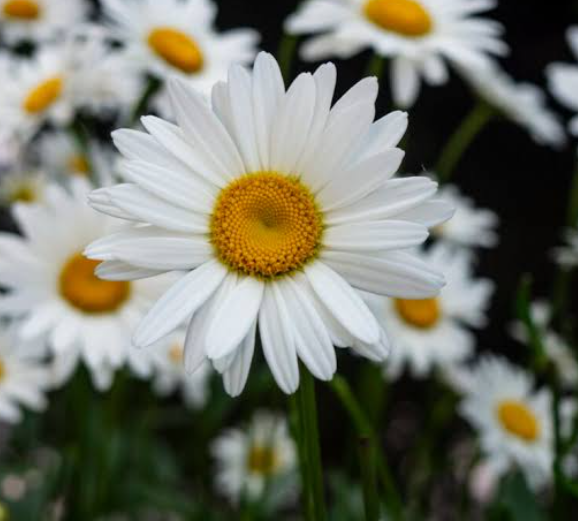
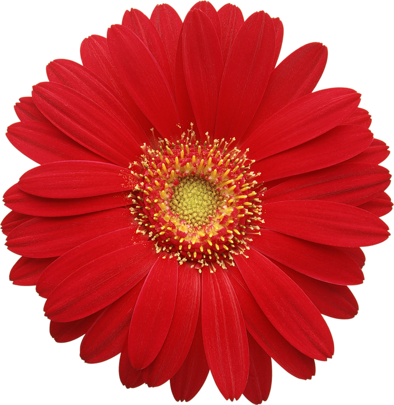
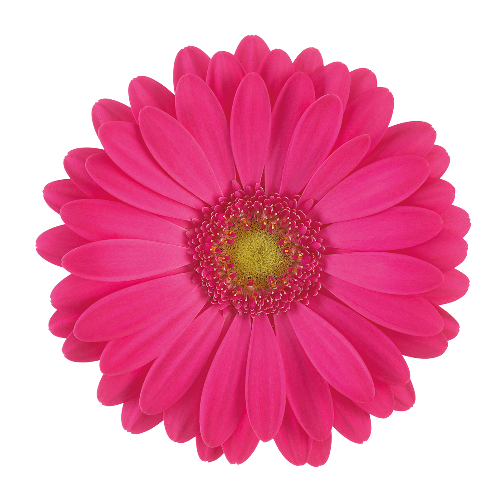

Papatyalar, papatyagiller (Asteraceae) familyasında yer alan, ortasında sarı tüpsü çiçeklerden oluşan bir diski ve çevresini taç gibi saran narin beyaz yaprakları bulunan otsu ve aromatik bitkilerdir.
Dayanıklılık: İklim ve toprak seçiciliği oldukça azdır; kırlarda, yol kenarlarında ve boş arazilerde kendiliğinden yetişebilir. Türkiye, papatya çeşitliliği bakımından oldukça zengindir (binin üzerinde türü bulunur). Kullanım Alanları: Özellikle Matricaria chamomilla (Mayıs papatyası / tıbbi papatya) türü kurutularak papatya çayı yapımında, kozmetikte, cilt bakım ürünlerinde ve aromaterapide yaygın olarak kullanılır. Sakinleştirici ve mideyi rahatlatıcı özellikleri ile bilinir. Sembolik Anlamı: Çiçek dilinde saflık, masumiyet, temizlik ve saf sevgiyi simgeler. Tarih boyunca halk arasında "seviyor-sevmiyor" fallarına konu olmuştur.